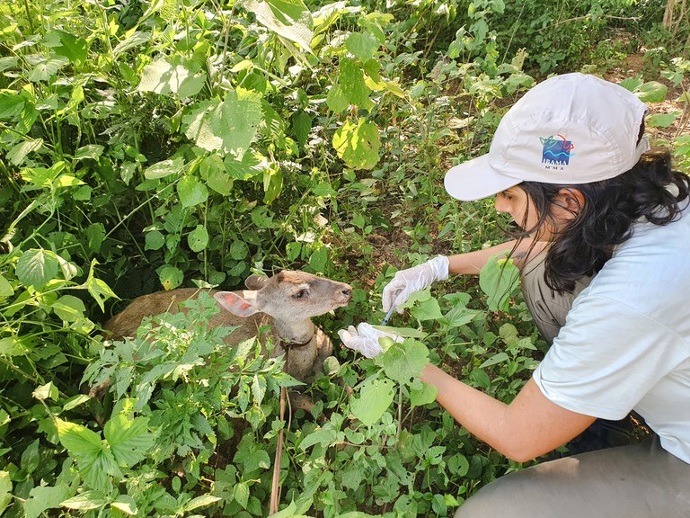
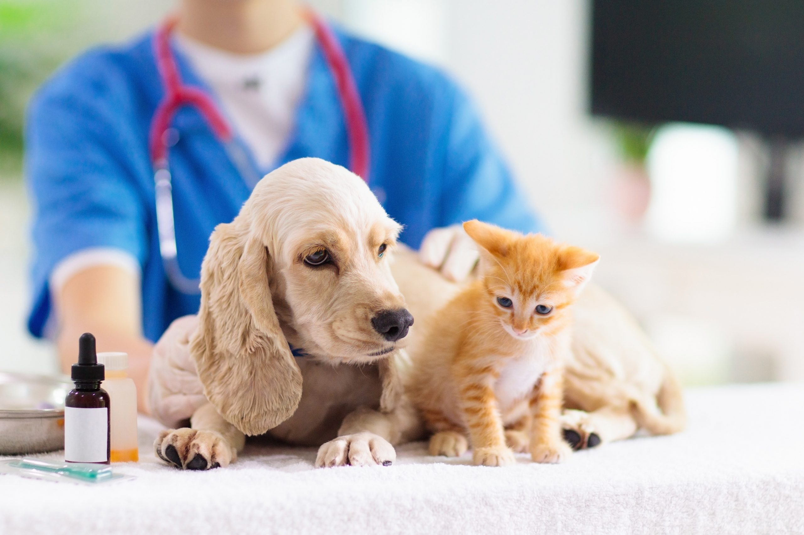

Resgate em áreas rurais
Equipe especializada buscou e resgatou animais feridos em áreas de mata e estradas. Levamos ao centro para atendimento e reabilitação.
Conheça as campanhas que estamos desenvolvendo — participe com doações, divulgação ou voluntariado.

Equipe especializada buscou e resgatou animais feridos em áreas de mata e estradas. Levamos ao centro para atendimento e reabilitação.

Campanha de consultas e vacinas em bairros com pouca cobertura veterinária. Atuamos com prevenção e tratamento.